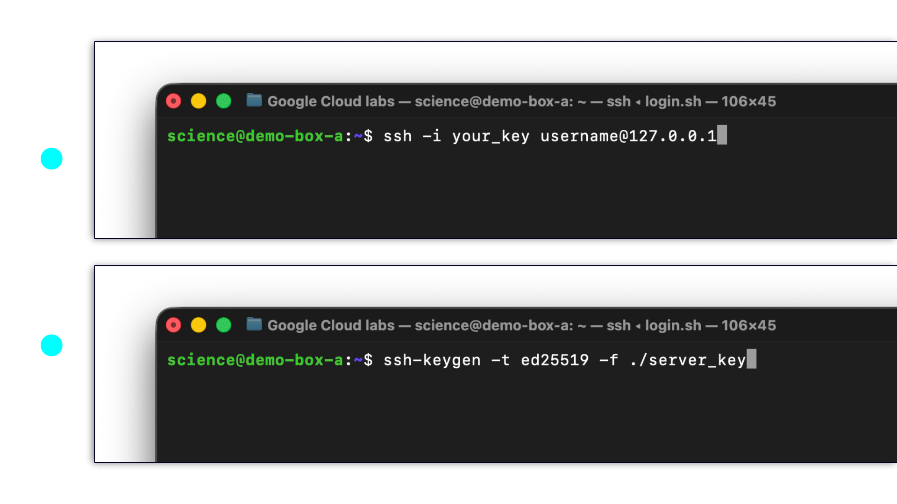

Logging in with SSH
To log in to a virtual machine, you’ll often use Secure Shell (SSH).
In this activity, you will learn how to login; and you'll also learn to create the cryptographic key pair that's required for a secure connection.
Explore the login command
Here is an example.
ssh -i ./lab_key learner@192.0.2.10Below, you can select each part of the command to learn more.
Starts the SSH program on your computer.
Explore the SSH key pair
When logging in, SSH uses a cryptographic key pair to verify your identity. Luckily, you can create a key pair with the ssh-keygen command.
Here is an example.
ssh-keygen -t ed25519 -f ./lab_keySelect each part of the command to learn more.
Creates a key pair: a private key and a matching public key.
What happens when you run ssh-keygen?
The ssh-keygen command is interactive. After you enter the command, your computer asks for additional information. It will ask you for a passphrase, or you may leave this blank. It may ask you for a filename.
In this example, -f ./lab_key already specifies the filename. But if you omit -f and its file path, ssh-keygen will ask where to save the key. Also, you must choose a different filename for each key pair. If you don't, you might replace an existing key.
After that's done, you’ll receive two files:
- lab_key — your private key. Keep it on your computer, and do not share it.
- lab_key.pub — your public key. You'll either upload it to your cloud service account or install it directly on your virtual machine.
In the Terminal
The screenshots below show how ssh and ssh-keygen might look when you run them in a terminal.
Before you begin the simulation, try to identify each command. In the image, select the buttons to check your answer and review what the command will do.

Read the commands as text.
Upper terminal:
ssh -i your_key username@127.0.0.1Lower terminal:
ssh-keygen -t ed25519 -f ./server_keyTime to Practice
Practice typing the ssh-keygen and ssh login commands. Notice that these terminals are simulations; they do not support a normal set of command line utilities nor do they support the full ssh commands.
Incomplete
Create an SSH key pair
Enter the ssh-keygen command, then follow the prompts. Remember, you may leave passphrase blank by pressing Enter at both passphrase prompts.
Incomplete
Log in with SSH
Assuming your public key has already been installed on the practice machine, you can login! Try entering a ssh login command below. Your user name is learner and the server's IP address is 192.0.2.10
Try SSH-Keygen
Now you can try creating a key pair on your own computer.
- macOS: Open Spotlight with Command+Space, type Terminal, and press Return.
- Windows: Open the Start menu, search for PowerShell, and open it.
Enter an ssh-keygen command to create a practice key pair. Remember you can use -f ./practice_key to choose its file path and filename.
Choose a passphrase when prompted. If the command asks to overwrite an existing file, answer no and choose a different filename.
You’ll receive practice_key, your private key, and practice_key.pub, your public key. Keep your private key on your computer and do not share it.
If ssh-keygen is unavailable, you'll probably need to set up OpenSSH on your machine. However, it is installed by default on both MacOS and Windows 10/11.
Good Luck! Hopefully, you have enjoyed this tutorial.
Next Activity: Use SSH to login to your VM.